건축기사 (2018-03-04 기출문제)
1과목: 건축계획
1. 도서관의 출납 시스템 유형 중 이용자가 자유롭게 도서를 꺼낼 수 있으나 열람석으로 가기 전에 관원의 검열을 받는 형식은?
- 폐가식
- 반개가식
- 자유개가식
- 안전개가식
(정답률: 79%)

2. 쇼핑센터의 몰(mall)의 계획에 관한 설명으로 옳지 않은 것은?
- 전문점들과 중심상점의 주출입구는 몰에 면하도록 한다.
- 몰에는 자연광을 끌어들여 외부공간과 같은 성격을 갖게 하는 것이 좋다.
- 다층으로 계획할 경우 시야의 개방감을 적극적으로 고려하는 것이 좋다.
- 중심상점들 사이의 몰의 길이는 150m를 초과하지 않아야 하며, 길이 40~50m 마다 변화를 주는 것이 바람직하다.
(정답률: 78%)
3. 연극을 감상하는 경우 배우의 표정이나 동작을 감상할 수 있는 시각 한계는?
- 3m
- 5m
- 10m
- 1 5m
(정답률: 88%)
4. 학교의 강당계획에 관한 설명으로 옳지 않은 것은?
- 체육관의 크기는 배구코트의 크기를 표준으로 한다.
- 강당은 반드시 전교생을 수용할 수 있도록 크기를 결정하지는 않는다.
- 강당 및 체육관으로 겸용하게 될 경우 체육관 목적으로 치중하는 것이 좋다.
- 강당 겸 체육관은 커뮤니티의 시설로서 이용될 수 있도록 고려하여야 한다
(정답률: 82%)
5. 다음 중 사무소 건축에서 기둥간격(span)의 결정요소와 가장 관계가 먼 것은?
- 건물의 외관
- 주차배치의 단위
- 책상배치의 단위
- 채광상 층고에 의한 안깊이
(정답률: 76%)
6. 건축양식의 시대적 순서가 가장 올바르게 나열된 것은?
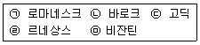
- ㉠ → ㉢ → ㉣ → ㉡ → ㉤(ㄱ-ㄷ-ㄹ-ㄴ-ㅁ)
- ㉠ → ㉢ → ㉣ → ㉤ → ㉡(ㄱ-ㄷ-ㄹ-ㅁ-ㄴ)
- ㉤ → ㉣ → ㉢ → ㉠ → ㉡(ㅁ-ㄹ-ㄷ-ㄱ-ㄴ)
- ㉤ → ㉠ → ㉢ → ㉣ → ㉡(ㅁ-ㄱ-ㄷ-ㄹ-ㄴ)
(정답률: 69%)
7. 아파트의 평면형식에 관한 설명으로 옳지 않은 것은?
- 중복도형은 모든 세대의 향을 동일하게 할 수 없다.
- 편복도형은 각 세대의 거주성이 균일한 배치 구성이 가능하다.
- 홀형은 각 세대가 양쪽으로 개구부를 계획할 수 있는 관계로 일조와 통풍이 양호하다.
- 집중형은 공용 부분이 오픈되어 있으므로, 공용 부분에 별도의 기계적 설비계획이 필요없다.
(정답률: 73%)
8. 고대 로마 건축에 관한 설명으로 옳지 않은 것은?
- 인술라(insula)는 다층의 집합주거 건물이다.
- 콜로세움의 1층에는 도릭 오더가 사용되었다.
- 바실리카 울피아는 황제를 위한 신전으로 배럴 볼트가 사용되었다.
- 판테온은 거대한 돔을 얹은 로툰다와 대형 열주 현관이라는 두 주된 구성 요소로 이루어진다.
(정답률: 67%)
9. 사무소 건축의 엘리베이터 설치 계획에 관한 설명으로 옳지 않은 것은?
- 군 관리운전의 경우 동일 군내의 서비스 층은 같게 한다.
- 승객의 층별 대기시간은 평균 운전간격 이상이 되게 한다.
- 서비스를 균일하게 할 수 있도록 건축물 중심부에 설치하는 것이 좋다.
- 건축물의 출입층이 2개 층이 되는 경우는 각각의 교통수요량 이상이 되도록 한다.
(정답률: 87%)
10. 다음 중 일반적으로 연면적에 대한 숙박 관계 부분의 비율이 가장 큰 호텔은?
- 해변 호텔
- 리조트 호텔
- 커머셜 호텔
- 레지멘셜 호텔
(정답률: 86%)
11. 다음 중 모듈 시스템의 적용이 가장 부적절한 것은?
- 극장
- 학교
- 도서관
- 사무소
(정답률: 76%)
12. 공장 건축의 레이아웃 계획에 관한 설명으로 옳지 않은 것은?
- 플랜트 레이아웃은 공장 건축의 기본설 계와 병행하여 이루어진다.
- 고정식 레이아웃은 조선소와 같이 제품이 크고 수량이 적을 경우에 적용된다.
- 다품종 소량생산이나 주문생산 위주의 공장에는 공정 중심의 레이아웃이 적합하다.
- 레이아웃 계획은 작업장 내의 기계설비 배치에 관한 것으로 공장규모 변화에 따른 융통성은 고려대상이 아니다.
(정답률: 86%)
13. 다음과 같은 특징을 갖는 부엌의 평면형은?
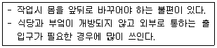
- 일렬형
- ㄱ자형
- 병렬형
- ㄷ자형
(정답률: 79%)
14. 다음 중 다포양식의 건축물이 아닌 것은?
- 내소사 대웅전
- 경복궁 근정전
- 전등사 대웅전
- 무위사 극락전
(정답률: 68%)
15. 현장감을 가장 실감나게 표현하는 방법으로 하나의 사실 또는 주제의 시간 상황을 고정시켜 연출하는 것으로 현장에 임한 느낌을 주는 특수전시기법은?
- 디오라마 전시
- 하모니카 전시
- 파노라마 전시
- 아일랜드 전시
(정답률: 78%)
16. 종합병원의 건축계획에 관한 설명으로 옳지 않은 것은?
- 부속진료부는 외래환자 및 입원환자 모두가 이용하는 곳이다.
- 간호사 대기소는 각 간호단위 또는 각층 및 동별로 설치한다.
- 집중식 병원건축에서 부속진료부와 외래부는 주로 건물의 저층부에 구성된다.
- 외래진료부의 운영방식에 있어서 미국의 경우는 대개 클로즈드 시스템인데 비하여, 우리나라는 오픈 시스템이다.
(정답률: 88%)
17. 상점 정면(facade)구성에 요구되는 5가지 광고요소(AIDMA 법칙)에 속하지 않는 것은?
- Attention(주의)
- Identity(개성)
- Desire(욕구)
- Memory(기억)
(정답률: 79%)
18. 단독주택계획에 관한 설명으로 옳지 않은 것은?
- 건물이 대지의 남측에 배치되도록 한다.
- 건물은 가능한 한 동서로 긴 형태가 좋다.
- 동지 때 최소한 4시 간 이상의 햇빛이 들어오도록 한다.
- 인접 대지에 건물이 없더라도 개발 가능성을 고려하도록 한다.
(정답률: 65%)
19. 극장의 평면형식 중 프로시니엄형에 관한 설명으로 옳지 않은 것은?
- 픽쳐 프레임 스테이지형이라고도 한다.
- 배경은 한 폭의 그림 과 같은 느낌을 준다.
- 연기자가 제한된 방향으로만 관객을 대하게 된다.
- 가까운 거리에서 관람하면서 가장 많은 관객을 수용할 수 있다.
(정답률: 88%)
20. 다음 중 단독주택의 부엌 크기 결정 요소로 볼 수 없는 것은
- 작업대의 면적
- 주택의 연면적
- 주부의 동작에 필요한 공간
- 후드(hood)의 설치에 의한 공간
(정답률: 79%)
2과목: 건축시공
21. 린건설 (Lean Construction) 에서의 관리방법으로 옳지 않은 것은?
- 변이관리
- 당김생산
- 흐름생산
- 대량생산
(정답률: 70%)
22. 와이어로프로 매단 비계 권상기에 의해 상하로 이동시킬 수 있는 공사용비계의 명칭은?
- 시스템비계
- 틀비계
- 달비계
- 쌍줄비계
(정답률: 71%)
23. 조적조에 발생하는 백화현상을 방지하기 위하여 취하는 조치로서 효과가 없는 것은?
- 줄눈부분을 방수처리하여 빗물을 막는다.
- 잘 구워진 벽돌을 사용한다.
- 줄눈 모르타르에 방수제를 넣는다.
- 석회를 혼합하여 줄눈 모르타르를 바른다
(정답률: 83%)
24. 건축마감공사로서 단열공사에 관한 설명으로 옳지 않은 것은?
- 단열시공바탕은 단열재 또는 방습재 설치에 못, 철선, 모르타르 등의 돌출물이 도움이 되므로 제거하지 않아도 된다.
- 설치위치에 따른 단열공법 중 내단열공법은 단열성능이 적고 내부 결로가 발생할 우려가 있다.
- 단열재를 접착제로 바탕에 붙이고자 할 때에는 바탕면을 평탄하게 한 후 밀착하여 시공하되 초기박리를 방지하기 위해 압착상태를 유지시킨다.
- 단열재료에 따른 공법은 성형판단열재 공법, 현장발포재 공법, 뿜칠단열재 공법 등으로 분류할 수 있다.
(정답률: 80%)
25. QC(Quality Control) 활동의 도구와 거리가 먼 것은?
- 기능계통도
- 산점도
- 히스토그램
- 특성요인도
(정답률: 79%)
26. 바닥판과 보밑 거푸집설계 시 고려해야 하는 하중을 옳게 짝지은 것은?
- 굳지 않은 콘크리트 중량, 충격하중
- 굳지 않은 콘크리트 중량, 측압
- 작업하중, 풍하중
- 충격하중, 풍하중
(정답률: 65%)
27. 보강 콘크리트블록조의 내력벽에 관한 설명으로 옳지 않은 것은?
- 사춤은 3켜 이내마다 한다 .
- 통줄눈은 될 수 있는 한 피한다.
- 사춤은 철근이 이동하지 않게 한다.
- 벽량이 많아야 구조상 유리하다.
(정답률: 66%)
28. 철골공사에 관한 설명으로 옳지 않은 것은?
- 볼트접합부는 부식하기 쉬우므로 방청도장을 하여 야 한다.
- 볼트조임에는 임팩트렌치, 토크렌치 등을 사용한다.
- 철골조는 화재에 의한 강성저하가 심하므로 내화피복을 하여야 한다.
- 용접부 비파괴 검사에는 침투탐상법, 초음파탐상법 등이 있다.
(정답률: 67%)
29. 철근 콘크리트 PC 기둥을 8ton 트럭으로 운반하고자 한다. 차량 1대에 최대로 적재가능한 PC 기둥의 수는? (단, PC 기둥의 단면크기는 30cm×60cm, 길이는 3m 임)
- 1개
- 2개
- 4개
- 6개
(정답률: 54%)
30. 시멘트 분말도 시험방법이 아닌 것은?
- 플로우시험법
- 체분석법
- 브레인법
- 피크노메타법
(정답률: 51%)
31. 아스팔트 방수층, 개량 아스팔트 시트 방수층, 합성고분자계 시트 방수층 및 도막 방수층 등 불투수성 피막을 형성하여 방수하는 공사를 총칭하는 용어로 옳은 것은?
- 실링방수
- 맴브레인방수
- 구체침투방수
- 벤토나이트방수
(정답률: 78%)
32. 건축물 높낮이의 기준이 되는 벤치마크(Bench mark)에 관한 설명으로 옳지 않은 것은?
- 이동 또는 소멸우려가 없는 장소에 설치한다.
- 수직규준틀이라고도 한다.
- 이동 등 훼손될 것을 고려하여 2개소 이상 설치한다.
- 공사가 완료된 뒤라도 건축물의 침하, 경사 등의 확인을 위해 사용되기도 한다.
(정답률: 76%)
33. 파이프구조에 관한 설명으로 옳지 않은 것은?
- 파이프구조는 경량이며, 외관이 경쾌하다.
- 파이프구조는 대규모의 공장, 창고, 체육관, 동ㆍ식물원 둥에 이용된다.
- 접합부의 절단가공이 어렵다.
- 파이프의 부재형상이 복잡하여 공사비가 증대된다.
(정답률: 70%)
34. 미장공사에서 나타나는 결함의 유형과 가장 거리가 먼 것은?
- 균열
- 부식
- 탈락
- 백화
(정답률: 69%)
35. 공사금액의 결정방법에 따른 도급방식이 아닌 것은?
- 정액도급
- 공종별도급
- 단가도급
- 실비청산 보수가산도급
(정답률: 62%)
36. 경량골재콘크리트와 관련된 기준으로 옳지 않은 것은?
- 단위시멘트량의 최솟값 : 400kg/m3
- 물-결합재비의 최댓값 : 60%
- 기건단위질량(경량골재 콘크리트 1종) : 1700~2000kg/m3
- 굵은 골재의 최대치수 : 20mm
(정답률: 47%)
37. 프리패브 콘크리 트(prefab concrete)에 관한 설명으로 옳지 않은 것은?
- 제품의 품질을 균일화 및 고품질화 할 수 있다.
- 작업의 기계화로 노무 절약을 기대할 수 있다.
- 공장생산으로 기계화하여 부 재의 규격을 쉽게 변경할 수 있다 .
- 자재를 규격화하여 표준화 및 대량생산을 할 수 있다.
(정답률: 80%)
38. 보통 포틀랜드시멘트 경화체의 성질에 관한 설명으로 옳지 않은 것은?
- 응결과 경화는 수화반응에 의해 진행된다.
- 경화체의 모세관수가 소실되면 모세관장력이 작용하여 건조수축을 일으킨다.
- 모세관 공극은 물시멘트비가 커지면 감소한다.
- 모세관 공극에 있는 수분은 동결하면 팽창되고 이에 의해 내부압이 발생하여 경화체의 파괴를 초래한다.
(정답률: 73%)
39. 다음 설명이 의미하는 공법으로 옳은 것은?
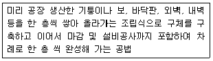
- 하프 PC합성바닥판공법
- 역타공법
- 적층공법
- 지하연속벽공법
(정답률: 78%)
40. 목재를 천연건조 시킬 때의 장점에 해당되지 않는 것은?
- 비교적 균일한 건조가 가능하다.
- 시설투자 비용 및 작업 비용이 적다.
- 건조 소요시간이 짧은 편이다.
- 타 건조방식에 비해 건조에 의한 결함이 비교적 적은 편이다.
(정답률: 84%)
3과목: 건축구조
41. 그림과 같은 내민보에서 A지점의 반력값은?
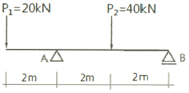
- 20 kN
- 30 kN
- 40 kN
- 50 kN
(정답률: 50%)
42. 기초 설계 시 인접대지를 고려하여 편심기초를 만들고자 한다. 이 때 편심기초의 지내력이 균동하도록 하기 위하여 어떤 방법을 이용함이 가장 타당한가?
- 지중보를 설치한다.
- 기초 면적을 넓힌다.
- 기둥의 단면적을 크게 한다.
- 기초 두께를 두껍게 한다.
(정답률: 75%)
43. 주철근으로 사용된 D22 철근 180°표준갈고리의 구부림 최소 내면 반지름(γ)으로 옳은 것은?
- γ = ldb
- γ = 2db
- γ =2.5db
- γ = 3db
(정답률: 57%)
44. 모살치수 8mm, 용접 길이 500mm인 양면모살용접의 유효 단면적은 약 얼마인가?
- 2100 mm2
- 3221 mm2
- 4300 mm2
- 5421mm2
(정답률: 55%)
45. 강구조에서 용접 선 단부에 붙인 보조판으로 아크의 시작이나 종단부의 크레이터 등의 결함을 방지하기 위해 붙이는 판은?
- 스티프너
- 엔드탭
- 윙플레이트
- 커버플레이트
(정답률: 74%)
46. 그림과 같은 교차보(Cross beam) A, B 부재의 최대 휨모멘트의 비로서 옳은 것은? (단, 각 부재의 EI는 일정함)
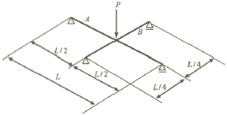
- 1 : 2
- 1 : 3
- 1 : 4
- 1 : 8
(정답률: 55%)
47. 프리스트레스하지 않는 부재의 현장치기 콘크리트에서 흙에 접하여 콘크리트를 친 후 영구히 흙에 묻혀 있는 콘크리트 부재의 최소 피복두께로 옳은 것은?(2021년 02월 개정된 규정 적용)
- 40mm
- 55mm
- 60mm
- 75mm
(정답률: 52%)
48. H형강의 플랜지에 커버 플레이트를 붙이는 주목적으로 옳은 것은?
- 수평부재간 접합 시 틈새를 메우기 위하여
- 슬래브와의 전단접합을 위하여
- 웨브플레이트의 전단내력 보강을 위하여
- 휨내력의 보강을 위하여
(정답률: 54%)
49. 다음 그림과 같은 부정정보를 정정보로만들기 위해 필요한 내부 힌지의 최소 개수는?
- 1 개
- 2개
- 3개
- 4 개
(정답률: 69%)
50. 직경 2.2cm, 길이 50cm의 강봉에 축방향 인장력을 작용시켰더니 길이는 0.04cm 늘어났고 직경은 0.0006cm 줄었다. 이 재료의 포아송수는?
- 0.015
- 0.34
- 2. 93
- 66.67
(정답률: 59%)
51. 다음 그림과 같은 캔틸레버보에서 B점의 처짐각(θB)은? (단, EI는 일정함)(오류 신고가 접수된 문제입니다. 반드시 정답과 해설을 확인하시기 바랍니다.)
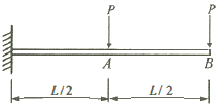
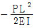
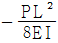
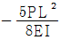
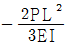
(정답률: 62%)
52. 그림과 같은 단면을 가진 압축재에서 유효좌굴길이 KL=250mm 일 때 Euler의 좌굴하중 값은? (단, E=210,000MPa 이다.)
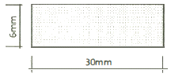
- 17.9 kN
- 43.0 kN
- 52.9 kN
- 64.7 kN
(정답률: 52%)
53. 그림과 같은 부정정 라멘의 B.M.D에서 P값을 구하면?
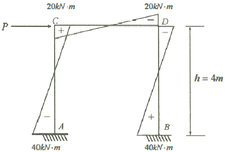
- 20kN
- 30kN
- 50kN
- 60kN
(정답률: 65%)
54. 지진력저항시스템의 분류 중 이중골조시스템에 관한 설명으로 옳지 않은 것은?
- 모멘트골조가 최소한 설계지진력의 75%를 부담한다.
- 모멘트골조와 전단벽 또는 가새골조로 이루어져 있다.
- 전체 지진력은 각 골조의 횡강성비에 비례하여 분배한다.
- 일정 이상의 변형능력을 갖도록 연성상세설계가 되어야 한다
(정답률: 58%)
55. 그림과 같은 부정정 라멘에서 CD기둥의 전단력 값은?
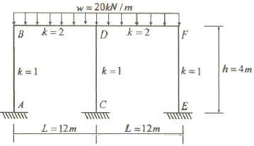
- 0
- 10kN
- 20kN
- 30kN
(정답률: 66%)
56. 그림과 같은 옹벽에 토압 10kN이 가해지는 경우 이 옹벽이 전도되지 않기 위해서는 어느 정도의 자중(自重)을 필요로 하는가?
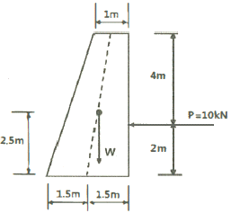
- 12.71 kN
- 11.71 kN
- 10.44 kN
- 9.71 kN
(정답률: 45%)
57. 강도설계법에서 처짐을 계산하지 않는 경우 철근콘크리트 보의 최소 두께 규정으로 옳지 않은 것은? (단, 보통콘크리트와 설계기준항복강도 400MPa 철근을 사용한 부재임)
- 단순 지지 : l/16
- 1단 연속 : l/18.5
- 양단 연속 : l/12
- 캔틸레버 : l/8
(정답률: 67%)
58. 강도설계법에 의해서 전단보강 철근을 사용하지 않고 계수하중에 의한 전단력 Vu = 50kN을 지지하기 위한 직사각형 단면보의 최소 유효깊이 d는? (단, 보통중량콘크리트 사용, fck = 28MPa, bw = 300mm)
- 4⑤ mm
- 444mm
- 504mm
- 6⑤ mm
(정답률: 47%)
59. 강도설계법에 따른 철근콘크리트 부재의 휨에 관한 일반사항으로 옳지 않은 것은?
- 콘크리트의 인장강도는 철근콘크리트 부재 단면의 축강도와 휨강도 계산에서 무시할 수 있다.
- 휨모멘트 또는 휨모벤트와 축력을 동시에 받는 부재의 콘크리트 압축연단의 극한 변형률은 0. 003으로 가정한다.
- 휨부재의 최소철근량은
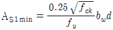
또는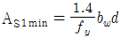
중 큰 값 이상이어야 한다. - 강도설계법에서는 연성파괴 보다는 취성파괴를 유도하도록 설계의 초점을 맞추고 있다.
(정답률: 63%)
60. 1변의 길이가 각각 50mm(A), 100mm(B) 인 두 개의 정사각형 단변에 동일한 압축하중 P가 작용할 때 압축웅력도의 비(A : B)는?
- 2 : 1
- 4 : 1
- 8 : 1
- 16 : 1
(정답률: 60%)
4과목: 건축설비
61. 다음의 어떤 수조면의 일사량을 나타낸 값 중 그 값이 가장 큰 것은?
- 전천일사량
- 확산일사량
- 천공일사량
- 반사일사량
(정답률: 62%)
62. 간접가열식 급탕법에 관한 설명으로 옳지 않은 것은?
- 대규모 급탕설비에 적합하다.
- 보일러 내부에 스케일의 발생 가능성이 높다.
- 가열코일에 순환하는 증기는 저압으로도 된다.
- 난방용 증기를 사용하면 별도의 보일러가 필요 없다.
(정답률: 66%)
63. 볼류트 펌프의 토출구를 지나는 유체의 유속이 2.5m/s, 유량이 1m3/min일 경우, 토출구의 구경은?
- 75mm
- 82mm
- 92mm
- 1⑤mm
(정답률: 40%)
64. 다음과 같은 조건에서 실의 현열부하가 7000W인 경우 실내 취출풍량은?
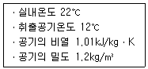
- 1042m3/h
- 2079m3/h
- 3472m3/h
- 6944m3/h
(정답률: 55%)
65. 금속관 공사에 관한 설명으로 옳지 않은 것은?
- 고조파의 영향이 없다.
- 저압, 고압, 통신설비 등에 널리 사용된다.
- 사용 목적과 상관없이 접지를 할 필요가 없다
- 사용장소로는 은폐장소, 노출장소, 옥측, 옥외 등 광범위하게 사용할 수 있다.
(정답률: 72%)
66. 급수관의 관경 결정과 관계가 없는 것은?
- 관균등표
- 동시사용률
- 마찰저항선도
- 동적부하해석법
(정답률: 52%)
67. 주관적 온열요소 중 인체의 활동상태의 단위로 사용되는 것은?
- met
- clo
- lm
- cd
(정답률: 60%)
68. 다음 중 약전 설비(소세력 전기설비)에 속하지 않는 것은?
- 조명설비
- 전기음향설비
- 감시제어설비
- 주차관제설비
(정답률: 59%)
69. 압력탱크식 급수설비에서 탱크 내의 최고압력이 350kPa, 흡입양정이 5m 인 경우, 압력탱크에 급수하기 위해 사용되는 급수펌프의 양정은?
- 약 3.5m
- 약 8.5m
- 약 35m
- 약 40m
(정답률: 37%)
70. 직류 엘리베이터에 관한 설명으로 옳지 않은 것은?
- 임의의 기둥 토크를 얻을 수 있다.
- 고속 엘리베이터용으로 사용이 가능하다.
- 원활한 가감속이 가능하여 승차감이 좋다.
- 교류 엘리베이터에 비하여 가격이 저렴하다.
(정답률: 71%)
71. 전기설비의 전압구분에서 저압 기준으로 옳은 것은?(관련 규정 개정전 문제로 여기서는 기존 정답인 3번을 누르면 정답 처리됩니다. 자세한 내용은 해설을 참고하세요.)
- 교류 300[V] 이하, 직류 600[V] 이하
- 교류 600[V] 이하, 직류 600[V] 이하
- 교류 600[V] 이하, 직류 750[V] 이하
- 교류 750[V] 이하, 직류 750[V] 이하
(정답률: 73%)
72. 900명을 수용하고 있는 극장에서 실내 C02 농도를 0.1%로 유지하기 위해 필요한 환기량은? (단, 외기 CO2 농도는 0.04%, 1인당 CO2 배출량은 1 8L/h 이다.)
- 27000m3/h
- 30000m3/h
- 60000m3/h
- 66000m3/h
(정답률: 59%)
73. 냉난방 부하에 관한 설명으로 옳지 않은 것은?(오류 신고가 접수된 문제입니다. 반드시 정답과 해설을 확인하시기 바랍니다.)
- 틈새바람부하에는 현열부하 요소와 잠열부하 요소가 있다.
- 최대부하를 계산하는 것은 장치의 용량을 구하기 위한 것이다.
- 냉방부하 중 실부하란 전열부하, 일사에 의한 부하 등을 말한다.
- 인체 발생열과 조명기구 발생열은 난방부하를 증가시키므로 난방부하계산에 포함시킨다.
(정답률: 57%)
74. 광원의 연색성에 관한 설명으로 옳지 않은 것은?
- 고압수은램프의 평균 연색평가수(Ra)는 100이다
- 연색성을 수치로 나타낸 것을 연색평가수라고 한다.
- 평균 연색평가수(Ra)가 100에 가까울수록 연색성이 좋다.
- 물체가 광원에 의하여 조명될 때, 그 물체의 색의 보임을 정하는 광원의 성질을 말한다.
(정답률: 57%)
75. 다음은 옥내소화전설비에서 전동기에 따른 펌프를 이용하는 가압송수장치에 관한 설명이다. ( ) 안에 알맞은 것은?
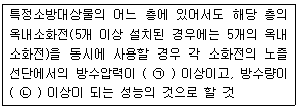
- ㉠ 0.17MPa, ㉡ 130ℓ/min
- ㉠ 0.17MPa, ㉡ 250ℓ/min
- ㉠ 0.34MPa, ㉡ 130ℓ/min
- ㉠ 0.34MPa, ㉡ 250ℓ/min
(정답률: 63%)
76. 구조체를 가열하는 복사난방에 관한 설명으로 옳지 않은 것은?
- 복사열에 의하므로 쾌적성이 좋다.
- 바닥, 벽체, 천장 등을 방열면으로 할 수 있다.
- 예열시간이 길고 일시적인 난방에는 바람직하지 않다.
- 방열기의 설치로 인해 실의 바닥면적의 이용도가 낮다.
(정답률: 73%)
77. 겨울철 벽체를 통해 실내에서 실외로 빠져나가는 열손실량을 계산할 때 필요하지 않은 요소는?
- 외기온도
- 실내습도
- 벽체의 두께
- 벽체 재료의 열전도율
(정답률: 70%)
78. 공기조화방식 중 팬코일 유닛 방식에 관한 설명으로 옳지 않은 것은?
- 덕트 방식 에 비해 유닛의 위치 변경이 용이하다
- 유닛을 창문 밑에 설치하면 콜드 드래프트를 줄일 수 있다 .
- 전공기 방식 으로 각 실에 수배관으로 인한 누수의 염려가 없다.
- 각 실의 유닛은 수동으로도 제어할 수 있고, 개별 제어가 용이하다
(정답률: 73%)
79. 3상 동력과 단상 전등, 전열부하를 동시에 사용 가능한 방식으로 사무소 건물 등 대규모 건물에 많이 사용되는 구내 배전방식은?
- 단상 2선식
- 단상 3선식
- 3상 3선식
- 3상 4선식
(정답률: 75%)
80. 도시가스 배관 시공에 관한 설명으로 옳지 않은 것은?
- 건물 내에서는 반드시 은폐배관으로 한다.
- 배관 도중에 신축 흡수를 위한 이음을 한다.
- 건물의 주요 구조부를 관통하지 않도록 한다.
- 건물의 규모가 크고 배관 연장이 길 경우는 계통을 나누어 배관한다 .
(정답률: 74%)
5과목: 건축법규
81. 다음 중 두께에 관계없이 방화구조에 해당되는 것은?
- 심벽에 흙으로 맞벽치기한 것
- 석고판 위에 회반죽을 바른 것
- 시멘트모르타르 위에 타일을 붙인 것
- 석고판 위에 시멘트모르타르를 바른 것
(정답률: 71%)
82. 다음의 각종 용도지역의 세분에 관한 설명 중 옳지 않은 것은?
- 근린상업지역 : 근린지역에서의 일용품 및 서비스의 공급을 위하여 필요한 지역
- 중심상업지역 : 도심ㆍ부도심의 상업기능 및 업무기능의 확충을 위하여 필요한 지역
- 제1종일반주거지역 : 단독주택을 중심으로 양호한 주거환경을 조성하기 위하여 필요한 지역
- 준주거지역 : 주거기능을 위주로 이를 지원하는 일부 상업기능 및 업무기능을 보완하기 위하여 필요한 지역
(정답률: 66%)
83. 다음은 공사감리에 관한 기준 내용이다. 밑줄 친 “공사의 공정이 대통령령으로 정하는 진도에 다다른 경우”에 속하지 않는 것은? (단, 건축물의 구조가 철근콘크리트조인 경우)(오류 신고가 접수된 문제입니다. 반드시 정답과 해설을 확인하시기 바랍니다.)
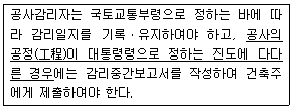
- 지붕슬래브배근을 완료한 경우
- 기초공사 시 철근배치를 완료한 경우
- 기초공사에서 주춧돌의 설치를 완료한 경우
- 지상 5개 층마다 상부 슬래브배근을 완료한 경우
(정답률: 63%)
84. 국토의 계획 및 이용에 관한 법령상 다음과 같이 정의되는 용어는?
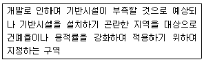
- 개발제한구역
- 시가화조정구역
- 입지규제최소구역
- 개발밀도관리구역
(정답률: 52%)
85. 제1종 일반주거지역 안에서 건축할 수 있는 건축물에 속하지 않는 것은?
- 아파트
- 단독주택
- 노유자시설
- 교육 연구시설 중ㆍ고등학교
(정답률: 77%)
86. 대통령령으로 정하는 용도와 규모의 건축물에 대해 일반이 사용할 수 있도록 소규모 휴식시설 등의 공개 공지 또는 공개 공간을 설치하여야 하는 대상 지역에 속하지 않는 것은?
- 준주거지역
- 준공업지역
- 일반주거지역
- 전용주거지역
(정답률: 56%)
87. 건축물의 층수 산정에 관한 기준 내용으로 옳지 않은 것은?
- 지하층은 건축물의 층수에 산입하지 아니한다.
- 층의 구분이 명확하지 아니한 건축물은 그 건축물의 높이 4m마다 하나의 층으로 보고 그 층수를 산정한다.
- 건축물이 부분에 따라 그 층수가 다른 경우에는 바닥면적에 따라 가중평균한 층수를 그 건축물의 층수로 본다.
- 계단탑으로서 그 수평투영면적의 합계가 해당 건축물 건축면적의 8분의 1 이하인 것은 건축물의 층수에 산입하지 아니한다.
(정답률: 49%)
88. 건축물의 건축 시 허가 대상 건축물이라 하더라도 미리 특별 자치시장ㆍ특별 자치도 지사 또는 시장ㆍ군수ㆍ구청장에게 국토교통부령으로 정하는 바에 따라 신고를 하면 건축허가를 받은 것으로 보는 소규모 건축물의 연면적 기준은?
- 연면적의 합계가 100m2 이하인 경우
- 연면적의 합계가 150m2 이하인 경우
- 연면적의 합계가 200m2 이하인 경우
- 연면적의 합계가 300m2 이하인 경우
(정답률: 54%)
89. 다음은 지하층과 피난층 사이의 개방공간 설치에 관한 기준 내용이다. ( )안에 알맞은 것은?
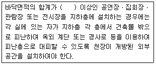
- 1000m2
- 2000m2
- 3000m2
- 4000m2
(정답률: 52%)
90. 건축법령상 연립주택의 정의로 알맞은 것은?
- 주택으로 쓰는 층수가 5개 층 이상인 주택
- 주택으로 쓰는 1개 동의 바닥면적 합계가 660m2 이하이고, 층수가 4개 층 이하인 주택
- 주택으로 쓰는 1개 동의 바닥면적 합계가 660m2를 초과하고, 층수가 4개 층 이하인 주택
- 1개 동의 주택으로 쓰이는 바닥면적의 합계가 330m2 이하이고 주택으로 쓰는 층수가 3개 층 이하인 주택
(정답률: 53%)
91. 국토의 계획 및 이용에 관한 법령상 기반시설 중 도로의 세분에 속하지 않는 것은?
- 고가도로
- 보행자우선도로
- 자전거우선도로
- 자동차전용도로
(정답률: 62%)
92. 급수ㆍ배수(配水)ㆍ배수(排水)ㆍ환기ㆍ난방 등의 건축설비를 건축물에 설치하는 경우, 건축기계설비기술사 또는 공조냉동기계기술사의 협력을 받아야 하는 대상 건축물에 속하지 않는 것은?
- 의료시설로서 해당 용도에 사용되는 바닥면적의 합계가 2000m2인 건축물
- 업무시설로서 해당 용도에 사용되는 바닥면적의 합계가 2000m2인 건축물
- 숙박시설로서 해당 용도에 사용되는 바닥면적의 합계가 2000m2인 건축물
- 유스호스텔로서 해당 용도에 사용되는 바닥면적의 합계가 2000m2인 건축물
(정답률: 53%)
93. 자연녹지지역으로서 노외주차장을 설치할 수 있는 지역에 속하지 않는 것은?
- 토지의 형질변경 없이 주차장의 설치가 가능한 지역
- 주차장 설치를 목적으로 토지의 형질변경 허가를 받은 지역
- 택지개발사업 등의 단지조성사업 퉁에 따라 주차수요가 많은 지역
- 하천구역 및 공유수면으로서 주차장이 설치되어도 해당 하천 및 공유수면의 관리에 지장을 주지 아니하는 지역
(정답률: 59%)
94. 다음은 건축법령상 직통계단의 설치에 관한 기준 내용이다. ( )안에 알맞은 것은?
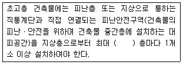
- 10개
- 20개
- 30개
- 40개
(정답률: 54%)
95. 다음 중 건축물의 용도분류상 문화 및 집회시설에 속하는 것은?
- 야외극장
- 산업전시장
- 어린이회관
- 청소년 수련원
(정답률: 50%)
96. 부설주차장 설치대상 시설물이 문화 및 집회시설 중 예식장으로서 시설면적이 1200m2인 경우, 설치하여야 하는 부설주차장의 최소 대수는?
- 8대
- 10대
- 15대
- 20대
(정답률: 70%)
97. 주차장 주차단위구획 의 최소 크기로 옳지 않은 것은? (단, 평행주차형식 외의 경우)(관련 규정 개정전 문제로 여기서는 기존 정답인 2번을 누르면 정답 처리됩니다. 자세한 내용은 해설을 참고하세요.)
- 경형 : 너비 2.0m, 길이 3.6m
- 일반형 : 너비 2.0m, 길이 6.0m
- 확장형: 너비 2.5m, 길이 5.1m
- 장애인전용: 너비 3.3m, 길이 5.0m
(정답률: 74%)
98. 피난안전구역(건축물의 피난ㆍ안전을 위하여 건축물 중간층에 설치하는 대피공간)의 구조 및 설비에 관한 기준 내용으로 옳지 않은 것은?
- 피난안전구역의 높이는 2.1m 이상일 것
- 비상용 승강기는 피난안전구역에서 승하차할 수 있는 구조로 설치할 것
- 건축물의 내부에서 피난안전구역으로 통하는 계단은 피난계단의 구조로 설치할 것
- 피난안전구역에는 식수공급을 위한 급수전을 1개소 이상 설치하고 예비전원에 의한 조명설비를 설치할 것
(정답률: 62%)
99. 6층 이상의 거실면적의 합계가 3000m2인 경우, 건축물의 용도별 설치하여야 하는 승용승강기의 최소 대수가 옳은 것은? (단, 15인승 승강기의 경우)
- 업무시설 - 2대
- 의료시설 - 2대
- 숙박시설 - 2대
- 위락시설 - 2대
(정답률: 58%)
100. 공작물을 축조할 때 특별자치시장ㆍ특별자치도지사 또는 시장ㆍ군수ㆍ구청장에게 신고를 하여야 하는 대상 공작물에 속하지 않는 것은? (단, 건축물과 분리하여 축조하는 경우)(2020년 12월 15일 개정된 규정 적용됨)
- 높이 3m인 담장
- 높이 5m인 굴뚝
- 높이 5m인 광고탑
- 높이 5m인 광고판
(정답률: 61%)